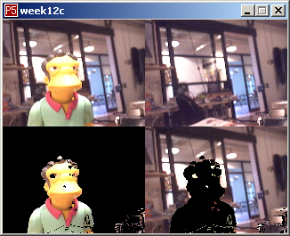

Week 12 -- digital image processing / computer vision
back to syllabusBackground Removal
The following example displays the live video stream in top left corner of the window. When the user clicks the mouse, a frame of video is saved as the "background" image and copied into a BImage object (and displayed in the top right corner of the window). We then walk through every pixel from the live video stream and check the color against the saved background using the "dist" function -- those that are sufficiently different from the background are displayed in the bottom left, those that are sufficiently the same are in the bottom right.(Try removing the background(0) command for an interesting effect.)

source code
back to syllabus